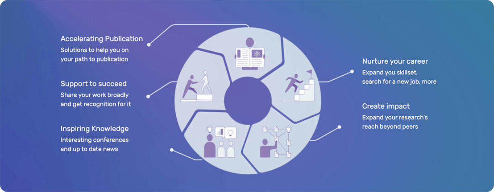

Springer Nature & Edanz partner to bring you custom solutions for every stage of your research journey.
And you shouldn t have to be! Expand your research capabilities with solutions to help you advance discovery and create real world impact.
Need inspiration for your next project? These solutions can help you develop and plan a creative and meaningful study with a clear plan and timeline.
Identify gaps in your field or find help to analyize your data using the latest analytical techniques.
Accelerate your project and avoid costly delays with industry and publisher compliant solutions developed in as little as 6 weeks.
Present with confidence. Professional graphic designers develop posters and slides that highlight the key points of your research in an engaging and visually appealing way.